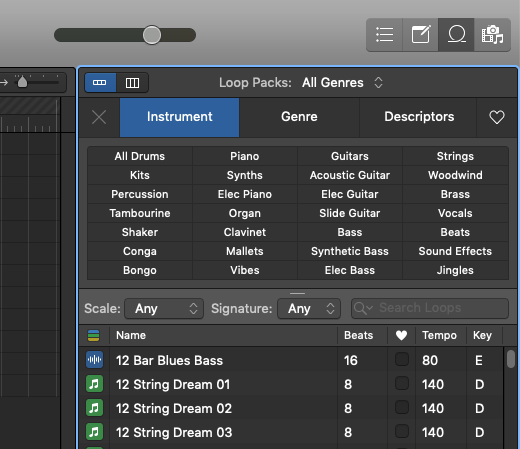
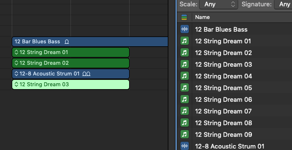
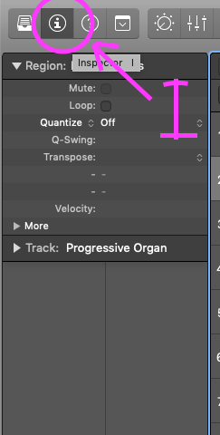
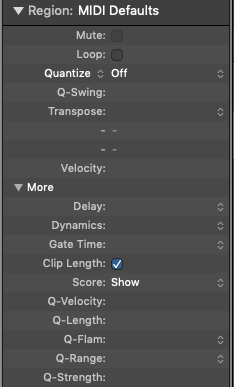
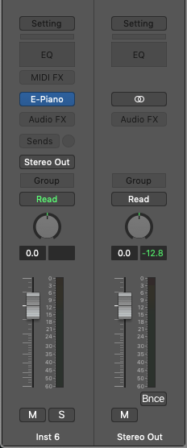
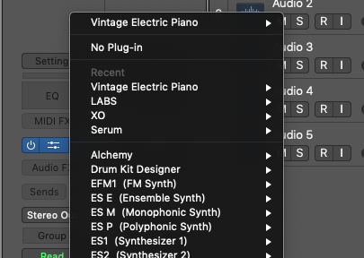
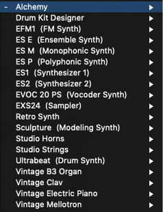

4. Loop
1) Press alphabet 'O' or click the third button which looks like '0'
2) You can open Loop window
3) You can use any loop(drum, piano, guitars, strings...)
4) You can use instrument, genre, descriptiors part!
5) You can search certain loop you want
2) You can open Loop window
3) You can use any loop(drum, piano, guitars, strings...)
4) You can use instrument, genre, descriptiors part!
5) You can search certain loop you want

1) You can drag loop by dragging the loop into track
2) It will change bpm of the loop according to your project automatically
3) You can use any loop(drum, piano, guitars, strings...)
4) You can edit these region by using tool function you learnd before
2) It will change bpm of the loop according to your project automatically
3) You can use any loop(drum, piano, guitars, strings...)
4) You can edit these region by using tool function you learnd before

5. Inspector
1) Press alphabet 'I' key
2) This is inspector
3) You can edit region, track and instrument
2) This is inspector
3) You can edit region, track and instrument

1) Mute cetain region(not track)(shortkey = 'ctrl' + 'M')
2) Loop certain region(shortkey = 'L')
3) Quantize note in region
4) Transpose = You can change pitch of note or audio region
5) Velocity = you can control velocity of region
6) I think you don't need to learn 'More' part
2) Loop certain region(shortkey = 'L')
3) Quantize note in region
4) Transpose = You can change pitch of note or audio region
5) Velocity = you can control velocity of region
6) I think you don't need to learn 'More' part

1) In this part You can bring instrument. not by library button
2) If you click 'E-Piano' part, you can change instrument
3) You can put FX plugins by clicking 'Audio FX' part(Delay, reverb, pitch...)
2) If you click 'E-Piano' part, you can change instrument
3) You can put FX plugins by clicking 'Audio FX' part(Delay, reverb, pitch...)

1) Press 'E-piano', then you can change instrument.
2) Press Alchemy
2) Press Alchemy

1) In alchemy, you can select thousands sounds.
2) You can select lead, pad, bass anything you want.
3) I think you can get pretty good sounds in alchemy.
4) If you want to use alchemy very well,
I think you should learn 'synthesizer ADSR' in youtube.
2) You can select lead, pad, bass anything you want.
3) I think you can get pretty good sounds in alchemy.
4) If you want to use alchemy very well,
I think you should learn 'synthesizer ADSR' in youtube.

1) In my opinion, You have to listen to all the sound in this instruments
2) Such as alchemy, drum kit, EFM1...
(you should learn these instruments individually in youtube)
2) Such as alchemy, drum kit, EFM1...
(you should learn these instruments individually in youtube)
